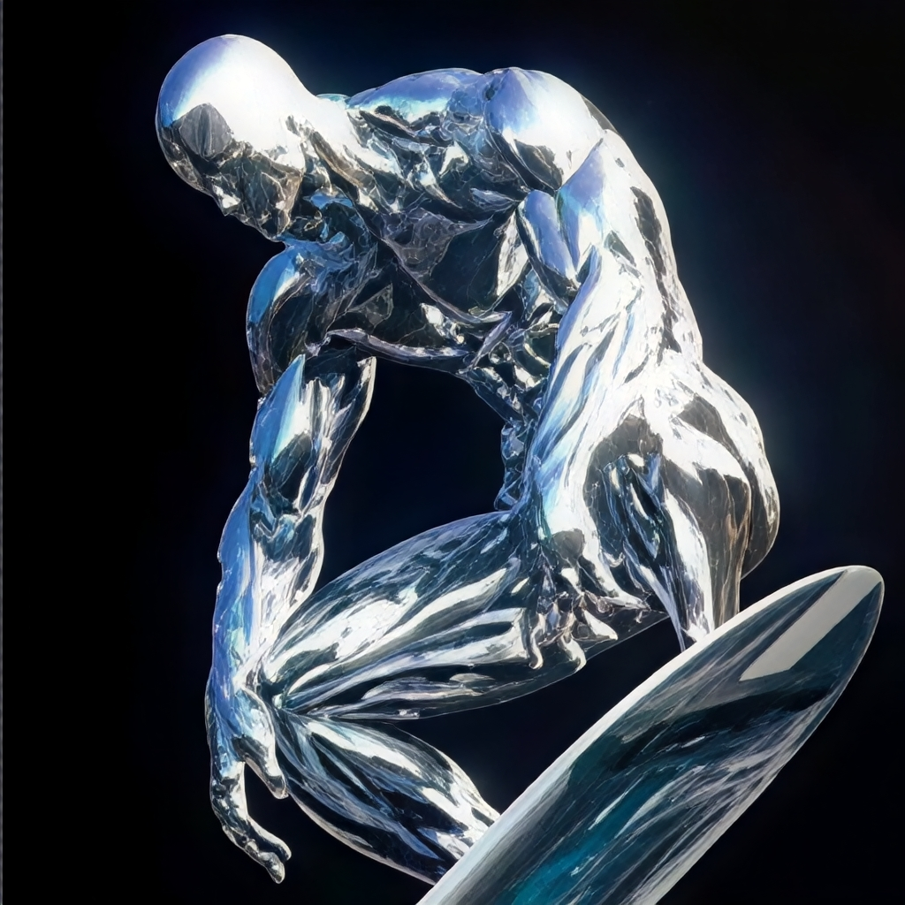

Cenários da Jornada


Nascido Norrin Radd no planeta Zenn-La, ele sacrificou sua liberdade para salvar seu mundo. Concedido com o Poder Cósmico e uma prancha indestrutível, ele cruza as galáxias na velocidade da luz.

Feita do mesmo material prateado e blindado que envolve seu corpo, a prancha responde diretamente aos comandos mentais do Surfista. Ela pode canalizar o Poder Cósmico, aprisionar inimigos e viajar através do hiperespaço e de barreiras dimensionais.